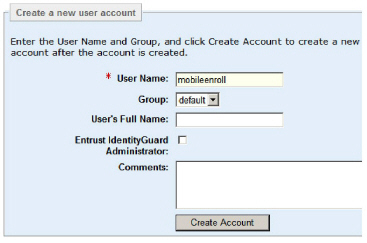
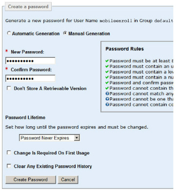
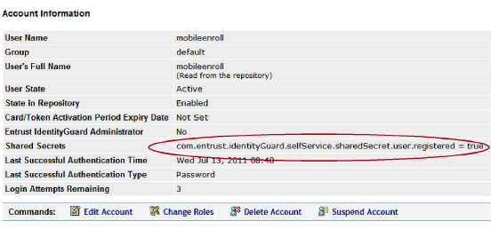
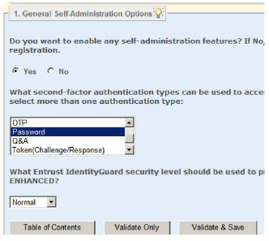
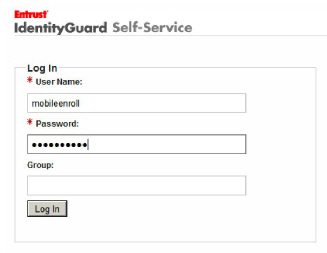
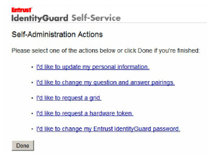

|
IdentityGuard Server 13.0 Administration Guide |
|
IdentityGuard Server 13.0 Administration Guide |
You must make these preliminary configurations:
● Enable first-factor authentication to Self-Service
● Enable (or disable) user registration in Self-Service
● Enable user administration in Self-Service
Note: Registration through Self-Service is a good way to create Entrust IdentityGuard user accounts for each user, on an as-needed basis (as opposed to bulk-loading users). It is also a good way to collect email addresses from users. Remember that users must have an Entrust IdentityGuard account before they can request a digital ID (of any type). They must also have an email address on file before they can request a digital ID for secure email.
The above-mentioned configurations are very customer-specific: for example, you can use a variety of different first-factor authentication methods. For details, see the Self-Service Module Installation and Configuration Guide.
Here are some quick steps to get a basic configuration working. Note that you will need to alter or re-do completely these configurations later, to meet your organization’s needs.
To perform the basic configuration of Self-Service
1. Using the Entrust IdentityGuard Administration interface, create a test user called:
mobileenroll
You will be using this user to test your basic configuration.

The Account Information for mobileenroll appears.
Now, create a password for mobileenroll:
2. Under Authentication Types, select Password and click Create Password.
3. Select Manual Generation.
4. Specify a password in the fields provided.
5. From the drop-down list, select Password Never Expires.
6. Deselect Change Is Required On First Usage.
Your page looks like this:

7. Click Create Password.
The Account Information page for mobileenroll appears.
Now, add an email address for mobileenroll (only required if using secure email digital IDs):
8. Click Edit Account.
9. Scroll down to Contact Information and expand it.
10. Under Add Contact Entry, next to Contact Label, select Email.
11. For the Contact Value, enter an email address, with your organization’s email domain. For example, mobileenroll@yourorganization.com. You will later be specifying this domain in the Self-Service properties.
12. Click Add.
Now, create a shared secret for mobileenroll:
13. Scroll down to Shared Secrets and expand it.
14. Click Add Shared Secret.
15. For the Secret Name, enter:
com.entrust.identityGuard.selfService.sharedSecret.user.registered
16. For the Secret Value, enter:
True
17. Click Add.
You have now added a shared secret to mobileenroll. This secret tells Self-Service that the user has registered already. The effect of this is that when mobileenrollbrowses to Self-Service, the pages asking the user to register will not be shown. Instead, mobileenrollwill be taken directly to the Self-Administration pages, where the user can ask for a digital ID.
18. Click Save Changes.
The shared secret now appears in mobileenroll account information.

Now, set up first-factor authentication:
19. Open the Self-Service Module’s Configuration interface.
20. From the menu at the top, click Administration.
21. Click Properties.
22. Click Generic JAAS Login Module Settings.
23. Under First-factor Authentication Login Module, select Entrust IdentityGuard Password. This setting enables mobileenroll to log in to Self-Service using the password you created earlier.
24. Click Validate & Save.
Now, set up authentication to Self-Administration:
25. Still in the Self-Service Module Configuration interface, from the top menu bar, click Administration.
26. Click General Self-Administration Options (it is the first link).
27. From the list of authenticators, select Entrust IdentityGuard Password.

This setting lets mobileenroll into the Administration pages of the Self-Service website using the Entrust IdentityGuard password you set up earlier. (Typically, you would ask for second-factor credentials such as a grid card to access this section of the site.)
28. Click Validate & Save.
29. Restart the Self-Service Module (available from the Services panel on Windows, or by entering igselfservice.sh restart from a command shell on Linux).
Now test that mobileenrollcan log in to Self-Service and access the Self-Administration pages:
30. Access the Self-Service application. (available from the Start menu on Windows, or by entering https://<SSM_host>:8445/IdentityGuardSelfService in a browser).
31. Log in as mobileenroll.

The Self-Administration Actions page appears.

Notice that there are no digital ID links on this page. You will be adding these in the next step.